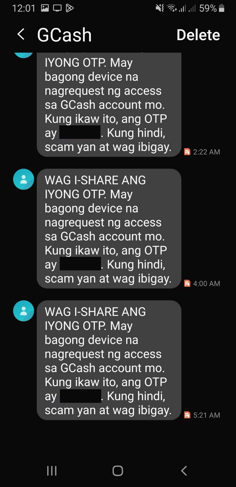
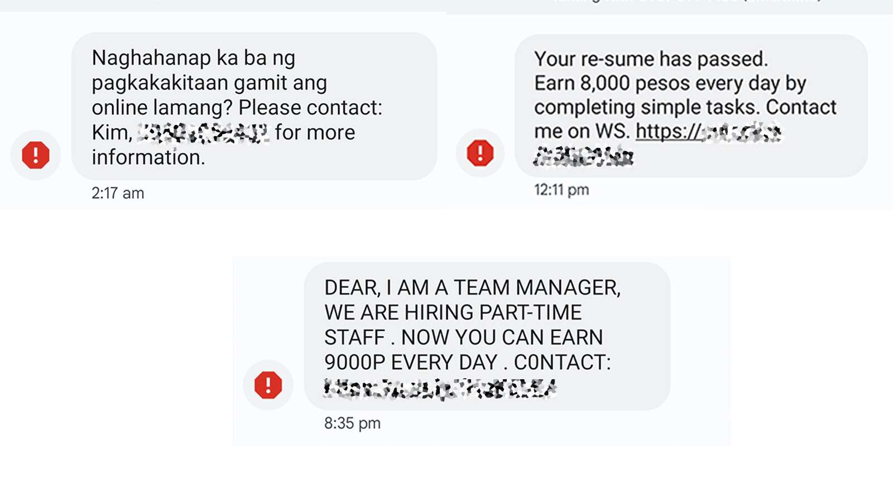

What is Cybersecurity?
"Anu ba itun Cybersecurity?"
Cybersecurity is the way of protecting our information, money, and devices on the internet — such as cellphones, computers, and the apps we use.
An Cybersecurity amo an paagi hin panalipod han aton impormasyon, kwarta, ngan mga gamit ha internet — sugad han cellphone, computer, ngan apps nga aton ginagamit.
🛡️ Internet security for Senior Citizens
Seguridad ha Internet para ha mga Senior Citizens
Do you know someone who got scammed on GCash?
Has your Facebook ever been hacked?
Today we will talk about how to avoid these situations.
"May kilala ba kamo nga na-scam ha GCash?"
"May Facebook ba kamo nga gin-hack?"
Aton pag-uusapan yana kun paonan-o malikayan ini nga mga panhitabo.
Simple Tips for Cybersecurity
Mga Yano nga Tambag ha Cybersecurity

🔒 1. Do not give your password, OTP, or GCash PIN.
Even if they claim to be from the bank, never give it.
Ayaw paghatag han imo password, OTP, o GCash PIN
Bisan pa kun masiring nga taga-bangko hira, ayaw gud paghatag.
📱 2. Do not click links from people you don’t know.
Even if it says “claim your prize,” don’t click.
Ayaw pag-click hin link tikang ha di mo kilala
Bisan pa may sugo nga "claim your prize", ayaw gad.
💬 3. Don’t quickly believe Facebook messages.
If there’s a nonsense video or link sent to you, don’t open it.
Ayaw pagsabot dayon ha mga mensahe ha Facebook
Kun may waray pulos nga video o link nga igpapasa, ayaw pag-open.

🔑 4. Use a strong password.
Example: PedroGuiuan1950!
Gamita an 'strong password'
Halimbawa: PedroGuiuan1950!
🚪 5. Always log out when you finish using.
Especially if you’re using a public computer or someone else’s phone.
Pirme mag-log out kun matapos ka gamit
Labina kun gamit mo an public computer o cellphone han iba.
🎯 Point:
We can protect ourselves. Be alert. Be strong even in the digital world.
Maproteheran an aton kalugaringon. Maging alerto. Maging marig-on bisan ha digital nga kalibutan.